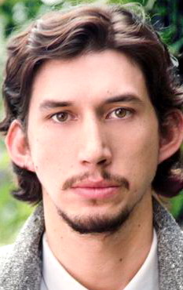
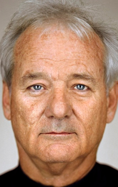
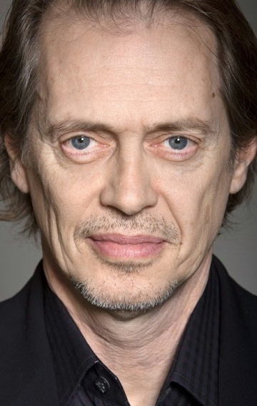

- В главных ролях:
- 
- 
- 
Адам Драйвер
Билл Мюррей
Тильда Суинтон
Стив Бушеми
Селена Гомес
год 2019
страна США, Швеция
слоган «The Road To Survival Could Be A Dead End»
режиссер Джим Джармуш
сценарий Джим Джармуш
продюсер Джошуа Астрачан, Peita Carnevale, Arielle De Saint Phalle, ...
оператор Фредерик Элмс
композитор Sqürl
художник Алекс ДиДжерландо, Джулия Хейманс, Катрин Джордж, ...
монтаж Аффонсо Гонсалвес
жанр ужасы, фэнтези, комедия, ...
сборы в США $6 563 605
сборы в мире + $7 939 225 = $14 502 830
сборы в России $733 752
зрители Россия 179.6 тыс.
премьера (мир) 14 мая 2019, ...
премьера (РФ) 11 июля 2019, «UPI»
цифровой релиз 5 сентября 2019, «Universal»
возраст 18+
рейтинг MPAA рейтинг R
время 104 мин. / 01:44
6.1
5.5
В захолустном американском городке что-то пошло не так. День никак не заканчивается, домашние животные убегают в лес, телефоны не работают, а по радио играет одна и та же песня. Вскоре выяснится, что эти аномалии происходят по всей земле, и ядовитый лунный свет воскресит давно почивших. Помощник шерифа уверен — грядёт нашествие зомби, и ничем хорошим это не кончится.
Трейлер